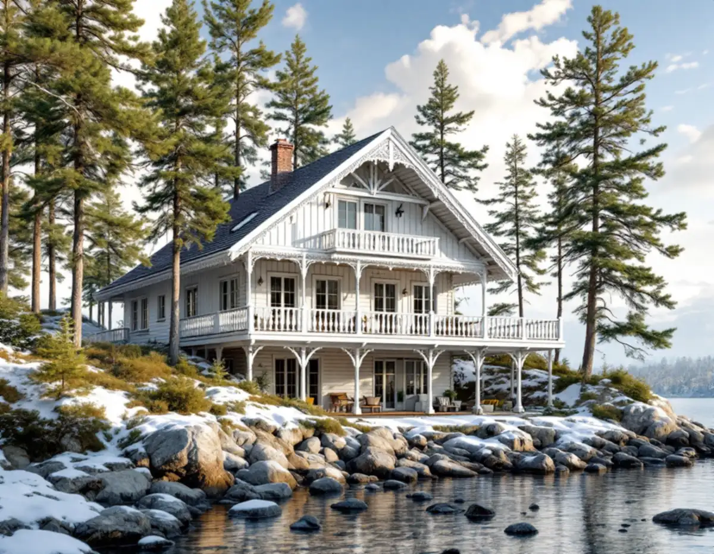
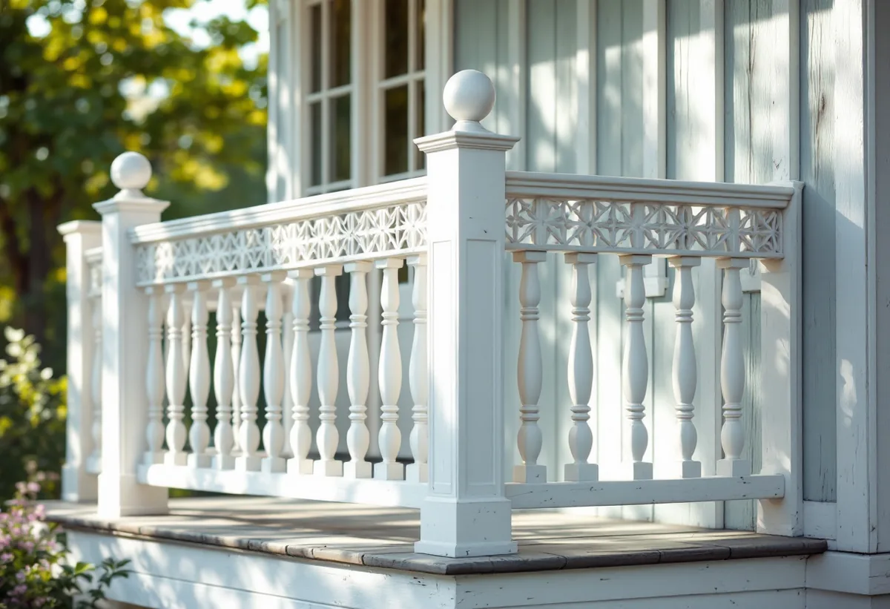

Karta och plan först
Vi slår upp fastigheten i kommunens webbkarta och läser detaljplanen, så att du vet om arbetet är lovfritt eller kräver lov eller anmälan.
Som snickare i Nacka arbetar man med tre helt olika sorters hus: panelvillor längs Saltsjöbanan, sommarvillor med verandor vid farleden i Boo och radhus i Älta. Vi lagar och bygger nytt i trä – verandor, panel, foder, altaner, väggar och förvaring – och kontrollerar först vad kommunens kulturmiljökarta och detaljplanen säger om just din tomt.

De så kallade Sjuvillorna i Saltsjöbaden byggdes 1896 efter ritningar av arkitekten Eric Lundroth och hör till ortens äldsta hus. Kommunens kulturmiljöprogram för villasamhällena vid järnvägen beskriver 1890-talets panelarkitektur som fantasirik och varierande, och på Neglingehalvön var samtliga 120 tomter sålda i början av 1900-talet.
Vid farleden i Boo är det sommarnöjena som präglar snickeriet. Enligt programmet för sommarnöjena massproducerade ångsågarna hyvlat virke och snickeridetaljer, och vissa snickerifabriker tillverkade hela hus som skeppades ut till tomterna. Schweizervillorna fick långt utskjutande tak, lövsågningsornament och verandor. Efter sekelskiftet blev foder och detaljer stramare, och från 1930-talet kom funkisbetonade stugor med ospröjsade fönster.
Älta började som egnahems- och sommarstugeort, och enligt kommunens kulturvandring i Älta byggdes det första radhusområdet, 25 radhus söder om Erstaviksvägen, 1968–1969. Där handlar snickeriet mer om planlösning, förvaring och uteplatser än om ornament.

En veranda på en sommarvilla från 1880-talet har ofta lagats många gånger med virke som inte riktigt passar. Vi tar ner det som är ruttet, mäter upp de ursprungliga profilerna och tillverkar nya stolpar, räcken, foder och lövsågade detaljer efter dem. På Eolsudde noterar kommunens program att en av de större schweizervillornas veranda fortfarande är öppen, medan andra tidigt glasades in.
Kulturmiljöprogrammen ger samma råd för både villastäderna och sommarnöjena: respektera husens proportioner, fasadfärg och tak samt detaljer som fönster, panel, utsmyckningar, entréer och räcken. För ett snickeriarbete betyder det att ny panel ska ha samma profil och dimension som den gamla, att foder och knutbrädor byts bit för bit i stället för i klump, och att entrépartiet lagas hellre än ersätts med en standarddörr.
Är målningen också sliten samordnar vi gärna snickeri och målning i samma etapp, så att träet hinner grundas innan det står ute en vinter.
För villorna längs Saltsjöbanan skriver kommunen att tillbyggnader ska underordnas huvudbyggnaden i placering, höjd och volym, och att takkupor, terrasser, balkonger och altaner helst ska läggas mot baksidan. Programmet avråder också från stora utfyllnader, stödmurar och hårdgjorda ytor. På en bergig tomt i Solsidan eller Saltsjö-Duvnäs är en altan på plintar som följer terrängen därför ofta lättare att få att passa in än ett högt trädäck på en gjuten mur.
Själva altanen kräver normalt inget bygglov inom detaljplan så länge den håller sig under 1,8 meter över marken inom 3,6 meter från huset, eller 1,2 meter längre ut, enligt Boverket. Ska den få tak och väggar blir det en tillbyggnad, och då räknas tidigare lovfria tillbyggnader och skärmtak in i de 30 kvadratmeter som får byggas till utan lov.
Nacka kommun skriver på sin sida om fasadändringar att nya fönster och dörrar, ändringar av befintliga, balkonger och mindre takkupor räknas som fasadändringar. På ett en- eller tvåbostadshus inom detaljplan krävs inte längre bygglov för dem, men åtgärden får inte strida mot detaljplanen. Ingrepp i den bärande konstruktionen kräver en anmälan.
Ligger fastigheten i ett område som kommunen bedömt som särskilt värdefullt enligt 8 kap. 13 § PBL krävs lov för samtliga fasadändringar som påverkar områdets karaktär eller husets yttre. I kommunens genomgång av de nya PBL-reglerna nämns att även en friggebod då kräver lov.
Ett råd från kommunens kundrådgivare är att prata med grannarna tidigt. Många tillsynsanmälningar kommer från grannar som inte visste vad som skulle byggas, och eftersom kommunen inte längre granskar många lovfria åtgärder i förväg ligger ansvaret på fastighetsägaren.
I ett radhus från slutet av 1960-talet är ytan given, så snickeriet handlar om att få ut mer av den: en vägg som flyttas för att ge ett extra sovrum, en trappa som byggs om, platsbyggda garderober under snedtak eller en bänk med förvaring i hallen. Innan en vägg rivs tar vi reda på om den är bärande – är den det behövs en konstruktör, en anmälan och startbesked innan arbetet börjar, enligt Boverket.
Har samfälligheten egna riktlinjer för altaner, plank och förråd följer vi dem, så att längan behåller sitt uttryck. Ligger altanen närmare tomtgränsen än 4,5 meter behövs dessutom grannens skriftliga medgivande för att slippa bygglov.
Vi slår upp fastigheten i kommunens webbkarta och läser detaljplanen, så att du vet om arbetet är lovfritt eller kräver lov eller anmälan.
Vi tittar på husets epok, mäter upp profiler på panel, foder och räcken och noterar fukt och röta.
Du får ett skriftligt förslag där nytt virke och nya detaljer matchar det som finns, eller en enkel modern lösning när det passar bättre.
Specialprofiler och lövsågade delar tas fram i förväg, så att huset står öppet så kort tid som möjligt.
Vi byter och bygger etappvis och samordnar med målare, elektriker eller VVS när det behövs.
Vi går igenom arbetet med dig och lämnar en sammanställning av vad som är gjort.
Rotavdraget är 30 procent av arbetskostnaden, högst 50 000 kr per person och år, och rot och rut får tillsammans vara högst 75 000 kr. Material och resor ger inget avdrag. Vi drar av beloppet direkt på fakturan.
Enligt Skatteverket ger det avdrag att bygga en altan som sitter ihop med huset och att reparera fasaden, men inte att bygga en fristående friggebod. Ett sommarhus i Boo som du äger och använder räknas också. För om- och tillbyggnad gäller att huset ska vara äldre än fem år räknat från värdeåret.
Mest betyder hur mycket av det gamla som går att spara, om profiler och ornament måste specialtillverkas, hur tomten lutar och hur långt materialet ska bäras. En rak altan på plan mark i Älta är ett annat jobb än en veranda med lövsågerier på en sluttning i Boo. Efter ett kostnadsfritt platsbesök får du ett skriftligt kostnadsförslag.
Altan, väggar, dörrar och inredning.
Snickare i Stockholm →Takbyte, takbesiktning och plåtarbeten.
Takläggare i Nacka →Saltsjöbaden, Boo och Älta.
Takrenovering i Nacka →VA, LTA och dagvatten på tomten.
Byggföretag i Nacka →Villasamhällena vid Saltsjöbanan.
Fönsterbyte i Nacka →Farledens plåttak och Saltsjöbadens villor.
Plåtslagare i Nacka →Strandskydd och villasamhällen.
Tillbyggnad i Nacka →